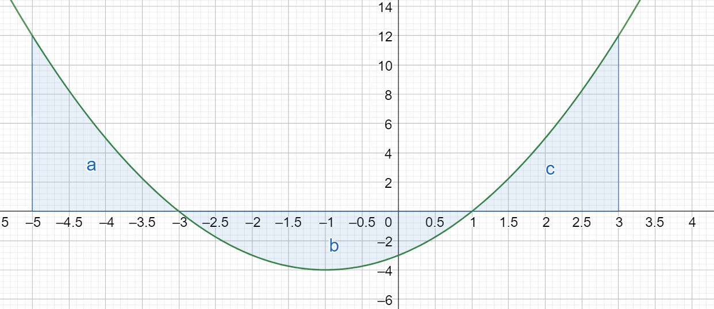
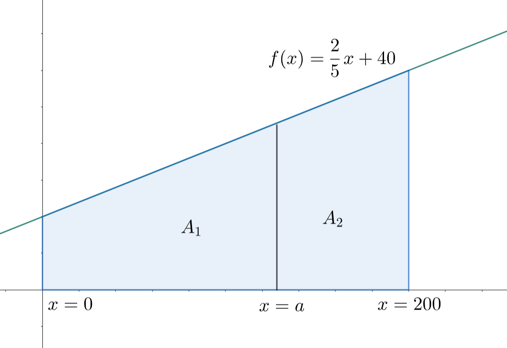

Määrätty integraali
Contents
Määrätty integraali#
Määrätyllä integraalilla on paljon sovelluksia sekä taso- että avaruusgeometriassa ja myös esimerkiksi fysiikassa ja tilastotieteessä. Määrätyn integraalin laskemiseen valitaan tarvitaan ensin funktion \(f(x)\) integraalifunktio \(F(x)\). Sitten valitaan kaksi muuttujan arvoa: alaraja \(x_1\) ja yläraja \(x_2\). Alaraja on siis vaaka-akselilla vasemmalla ja yläraja oikealla puolella. Lasketaan integraalifunktion arvot näissä pisteissä, siis \(F(x_1)\) ja \(F(x_2)\). Lopuksi lasketaan näiden arvojen erotus: \(F(x_2)-F(x_1)\). Määrätyn integraalin laskemisesta tuloksena on siis luku, ei lauseke.
Määrättyä integraalia laskettaessa voidaan aina asettaa integroimisvakioksi \(C=0\). Näin voidaan tehdä, koska erotusta \(F(x_2)-F(x_1)\) laskettaessa vakio kuitenkin sievenee pois.
Määrättyä integraalia merkitään seuraavasti: funktion \(f(x)\) määrätty integraali pisteestä \(x_1\) pisteeseen \(x_2\) on \(\int_{x_1}^{x_2} f(x) ~\text{d}x\).
Lisäksi käytetään seuraavaa merkintää: \(\overset{x_2}{\underset{x_1}{/}} F(x) = F(x_2) - F(x_1)\).
Huomautus
Yksinkertaisimmillaan määrätty integraali tarkoittaa funktion kuvaajan ja \(x\)-akselin väliin rajautuvaa pinta-alaa. Pinta-ala määritellään tällöin ns. Riemann-summan avulla seuraavasti:
\(\lim_{n \to \infty} \Sigma_{i=1}^n f(x_i) \Delta x\)
Laskukaava tarkoittaa sitä, että funktion kuvaajan ja \(x\)-akselin välistä pinta-alaa arvioidaan jakamalla pinta-ala kapeisiin suorakulmioihin. Suorakulmion leveys on aina jokin pieni \(\Delta x\), ja korkeus \(x\)-akselin tietyssä kohdassa on vastaava funktion arvo \(f(x)\). Yksittäisen suorakulmion pinta-ala jossakin tietyssä kohdassa \(x_i\) on siis leveyden ja korkeuden tulo eli \(f(x_i) \Delta x\).
Merkki \(\Sigma_{i=1}^n\) tarkoittaa, että lasketaan summa kaikista näistä suorakulmioista alkaen kohdasta \(x_i\) ja päättyen arvoon \(x_n\). Tästä summasta muodostuu koko käyrän rajaama pinta-ala. Jos suorakulmiot ovat leveitä, niin tuloksena on melko karkea arvio pinta-alasta. Tarkka tulos saadaan vasta, kun jokaisen suorakulmaisen leveys lähestyy nollaa ja toisaalta suorakulmioiden määrä lähestyy ääretöntä. Tätä kuvaa laskukaavan kohta \(\lim_{n \to \infty}\). Voit tutustua käsitteeseen kuvien ja animaatioiden kera Wikipediassa.
Integraalilaskennassa siis summa \(\Sigma\), jossa yhteenlaskettavien määrä lähestyy ääretöntä, korvataankin integraalilla \(\int\). Samalla suikaleen leveys \(\Delta x\) muuttuu ns. differentiaalisen pieneksi leveydeksi \(\text{d}x\). Monessa muussakin integraalilaskennan sovelluksessa jatkossa sovelletaan tätä periaatetta, että integroinnilla korvataan äärettömän pienistä palasista koostuvan summan laskeminen.
Esimerkki
Laske määrätyt integraalit:
a) \(\int_0^3 x+6~\text{d}x\),
b) \(\int_{2}^5 x^2+3~\text{d}x\).
Ratkaisu
a)
\(\begin{align} & \int_0^3 x+6~\text{d}x = \overset{3}{\underset{0}{/}} \frac{1}{2}x^2+6x \\ & = (\frac{1}{2}\cdot 3^2+6\cdot 3)- (\frac{1}{2}\cdot 0^2+6\cdot 0)\\ & = (\frac{9}{2}+18)-(0+0)=22.5 \end{align}\)
b)
\(\begin{align} & \int_2^5 x^2+3~\text{d}x = \overset{5}{\underset{2}{/}} \frac{1}{3}x^3+3x \\ & = (\frac{1}{3}\cdot 5^3+3\cdot 5)- (\frac{1}{3}\cdot 2^3+3\cdot 2) = \\ & = \left(\frac{25}{3}+15\right)-(\frac{8}{3}+6)=\frac{144}{3}=48 \end{align}\)
Pinta-aloja ja muita esimerkkejä#
Määrätyn integraalin, jossa alarajana on \(x_1\) ja ylärajana \(x_2\), voi tulkita funktion \(f(x)\) kuvaajan ja \(x\)-akselin väliin jäävän alueen pinta-alaksi, kun aluetta rajoitetaan pisteiseen \(x_1\) ja \(x_2\) asetetuilla suorilla. Jos funktion arvot ovat negatiivisia eli jos funktion kuvaaja kulkee \(x\)-akselin alapuolella, niin pinta-ala on määrätyn integraalin itseisarvo.
Lisäksi määrätyn integraalin voi tarvittaessa laskea palasina: pisteiden \(x_1\) ja \(x_2\) välistä voidaan valita mikä tahansa piste \(x_3\), ja tällöin
\(\int_{x_1}^{x_2} f(x)~\text{d}x = \int_{x_1}^{x_3} f(x)~\text{d}x + \int_{x_3}^{x_2} f(x)~\text{d}x\).

Esimerkki
Edellisessä kuvassa on funktion \(f(x)=x^2+2x-3\) kuvaaja. Funktiolla on nollakohdat \(x=-3\) ja \(x=1\). Laske funktion kuvaajan ja \(x-\) akselin väliin suorien \(x=-5\) ja \(x=3\) rajaama pinta-ala kolmessa osassa (kuvaan merkityt alueet \(a\), \(b\) ja \(c\)).
Ratkaisu
\(\int_{-5}^3 f(x)~\text{d}x = \int_{-5}^{-3} f(x)~\text{d}x + |\int_{-3}^1 f(x)~\text{d}x| +\int_1^3 f(x)~\text{d}x\)
Keskimmäisestä integraalista on laskettava itseisarvo, sillä funktion arvot ovat negatiivisia välillä \(-3 \leq x \leq 1\).
Funktion \(f(x)=x^2+2x-3\) integraalifunktio (jossa \(C=0\)) on \(F(x)=\frac{1}{3}x^3+x^2-3x\).
Alueen \(a\) pinta-ala on:
\(\begin{align} & F(-3)-F(-5) \\ & =\frac{1}{3}\cdot (-3)^3+(-3)^2-3\cdot(-3) - \left(\frac{1}{3}\cdot (-5)^3+(-5)^2-3\cdot(-5)\right)\\ & =\frac{32}{3} \end{align}\)
Alueen \(b\) pinta-ala on:
\(\begin{align} &\left|F(1)-F(-3)\right| \\ &=\left|\frac{1}{3}\cdot 1^3+1^2-3\cdot1 - \left(\frac{1}{3}\cdot (-3)^3+(-3)^2-3\cdot(-3)\right)\right|\\ &=\left|-\frac{32}{3}\right|=\frac{32}{3} \end{align}\)
Alueen \(c\) pinta-ala on:
\(\begin{align} & F(3)-F(1) \\ & = \frac{1}{3}\cdot 3^3+3^2-3\cdot 3 - \left(\frac{1}{3}\cdot 1^3+1^2-3\cdot 1\right) \\ & = \frac{32}{3} \end{align}\)
Yhteensä pinta-ala on siis \(3\cdot \frac{32}{3}=32\).
Esimerkki
Puolisuunnikkaan muotoinen tontti rajautuu \(x\)-akseliin sekä suoriin \(x=0\), \(x=200\) ja \(f(x)=\frac{2}{5}x+40\), missä kaikki luvut vastaavat pituuksia metreinä. Tontti halkaistaan kahtia \(y\)-akselin suuntaisella suoralla rajalla. Mistä kohti tontti pitää halkaista, jotta se jakaantuu kahteen yhtä suureen osaan?
Ratkaisu
Hahmotellaan tontista kuva ja merkitään halkaisukohtaa vaikkapa kirjaimella \(a\) sekä pinta-aloja halkaisukohdan eri puolilla \(A_1\) ja \(A_2\).

Pinta-alat ovat \(A_1=\int_{0}^a \frac{2}{5}x+40~\text{d}x\) ja \(A_2=\int_{a}^{200} \frac{2}{5}x+40~\text{d}x\). Muodostetaan kummallekin lauseke:
\(\begin{align} &A_1=\int_{0}^a \frac{2}{5}x+40~\text{d}x\\ & =\overset{a}{\underset{0}{/}} \frac{1}{5}x^2+40x\\ & = \frac{1}{5}\cdot a^2+40\cdot a - (\frac{1}{5}\cdot 0^2+40\cdot 0)\\ & = \frac{a^2}{5}+40a \end{align}\)
\(\begin{align} &A_2=\int_{a}^{200} \frac{2}{5}x+40~\text{d}x\\ & =\overset{200}{\underset{a}{/}} \frac{1}{5}x^2+40x\\ & = \frac{1}{5}\cdot 200^2+40\cdot 200 - (\frac{1}{5}\cdot a^2+40\cdot a)\\ & = \frac{200^2}{5}+40\cdot 200-\frac{a^2}{5}-40a \end{align}\)
Koska pinta-alojen pitää olla yhtä suuret, niin \(A_1=A_2\) eli \(\frac{a^2}{5}+40a=\frac{200^2}{5}+40\cdot 200-\frac{a^2}{5}-40a\). Ratkaisemalla yhtälö laskimella saadaan halkaisukohdaksi suunnilleen 123.6 metriä. Tuloksen voi tarkistaa laskemalla määrätyn integraalin nollasta tähän lukuun saakka ja sitten tästä lukuun 200 saakka. Kummankin puolikkaan pinta-alaksi tulee noin 8000 neliömetriä.
Esimerkki
Fysiikassa sijainti hetkellä \(t\), siis \(x(t)\), on nopeuden \(v(t)\) integraalifunktio. Kappale liikkuu hetkellä \(t\) nopeudella \(v(t)=3t\). Kuinka kauas lähtöpisteestä kappale etenee
a) välillä 0…1 sekuntia?
b) välillä 9…10 sekuntia?
c) välillä 0…10 sekuntia?
Ratkaisu
Funktion \(v(t)=3t\) integraalifunktio on \(x(t)=\int 3t~\text{d}t=\frac{3}{2}t^2\). Lasketaan tehtävänannon mukaiset määrätyt integraalit:
a) \(\int_0^1 3t~\text{d}t= x(1)-x(0)=\frac{3}{2}\cdot 1^2 - \frac{3}{2}\cdot 0^2 = \frac{3}{2}\)
b) \(\int_9^{10} 3t~\text{d}t= x(10)-x(9)=\frac{3}{2}\cdot 10^2 - \frac{3}{2}\cdot 9^2 = \frac{3}{2} (10^2-9^2) = \frac{3}{2}\cdot 19 = \frac{57}{2}\)
c) \(\int_0^{10} 3t~\text{d}t= x(10)-x(0)=\frac{3}{2}\cdot 10^2 - \frac{3}{2}\cdot 0^2 = \frac{300}{2}=150\)
Fysiikan taulukkokirjoista löytyy kaavat tasaisessa ja tasaisesti kiihtyvässä liikkeessä kuljetulle matkalle. Vakionopeudella \(v\) liikkuva kappale etenee ajassa \(t\) matkan \(x(t)=vt\). Kappale, joka liikkuu alkunopeudella \(v_0\) ja vakiona pysyvällä kiihtyvyydellä \(a\), etenee ajassa \(t\) matkan \(x(t)=v_0 t + \frac{1}{2}at^2\). Integraalilaskennan menetelmät mahdollistavat matkojen laskemisen, vaikka nopeus ei olisikaan tasainen eikä tasaisesti kiihtyvä.
Lisähaaste: johda kaavat \(x(t)=vt\) ja \(x(t)=v_0 t + \frac{1}{2}at^2\) integroimalla käyttäen tietoa, että matka on nopeuden integraali, ja nopeus on kiihtyvyyden integraali.
Esimerkki, jossa ei lasketa pinta-alaa
Kun raketti lähetetään maapallon pinnalta avaruuteen, tehdään periaatteessa nostotyötä. Fysiikan peruskaavojen mukaan nostotyö \(W\) on nostoon tarvittava voima \(mg\) kertaa nostokorkeus \(h\), eli \(W=mgh\), missä \(m\) on kappaleen massa ja \(g=9.81~\frac{\text{m}}{\text{s}^2}\). Laskukaava ei kuitenkaan päde kaukana maapallon pinnalta. Avaruudessa painovoima lasketaan kaavalla \(G(x)=\frac{\gamma M m}{x^2}\), missä \(\gamma\approx 6.67\cdot 10^{-11}~\frac{\text{Nm}^2}{\text{kg}^2}\) on gravitaatiovakio, \(M\approx 5.97\cdot 10^{24}~\text{kg}\) on maapallon massa, \(m\) on nostettavan kappaleen massa, ja \(x\) on etäisyys maapallon keskipisteestä. Maapallon pinnalla tämä etäisyys on noin 6370 km.
Laskukaava korkeudelta \(x_1\) korkeudelle \(x_2\) muuttuu nyt integraaliksi \(W=\int_{x_1}^{x_2} \frac{\gamma M m}{x^2}~\text{d}x\). Paljonko tehdään työtä, kun 2000 kg satelliitti nostetaan maapallon pinnalta 10 000 km korkeuteen?
Ratkaisu
Fysiikan käytäntöjen mukaan integroimisrajat pitää esittää metreinä. Integroinnin alarajana on maapallon säde \(x_1=\) 6 370 000 m ja ylärajaa \(x_2 = \) 10 000 000 m. Lasku etenee seuraavasti (yksiköt on jätetty selkeyden vuoksi pois, lopputuloksen yksikkö on joule):
\(\begin{align} & W = \int_{x_1}^{x_1} \frac{6.67 \cdot 10^{-11} \cdot 5.97 \cdot 10^{24} \cdot 2000}{x^2}~\text{d}x \\ & = 6.67 \cdot 10^{-11} \cdot 5.97 \cdot 10^{24} \cdot 2000 \int_{x_1}^{x_2} \frac{1}{x^2}~\text{d}x \\ & = 6.67 \cdot 10^{-11} \cdot 5.97 \cdot 10^{24} \cdot 2000 \overset{x_1}{\underset{x_1}{/}} -\frac{1}{x} = 4.6\cdot 10^{10} \end{align}\)
Epäoleellinen integraali#
Epäoleellinen integraali on määrätty integraali, jossa alarajana on \(-\infty\) tai ylärajana on \(\infty\) tai nämä molemmat toteutuvat yhtä aikaa. Tällöin määrätty integraali lasketaan siten, että vaihdetaan äärettömän paikalle jokin kirjain esim. \(t\), ja sitten lasketaan integroinnin tuloksena saadusta lausekkeesta raja-arvo, jossa \(t\) lähestyy tilanteesta riippuen negatiivista tai positiivista ääretöntä.
Esimerkki
a) Laske funktion \(f(x)=\frac{1}{x^2}\) ja \(x\)-akselin väliin jäävä pinta-ala \(x\):n arvosta 1 eteenpäin.
b) Laske funktion \(f(x)=x^2\) ja \(x\)-akselin väliin jäävä pinta-ala \(x\):n arvosta 1 eteenpäin.
Ratkaisu
a) Integroinnin alarajana on \(1\) ja ylärajana \(\infty\). Vaihdetaan ylärajan tilalle \(t\) ja muodostetaan integraali:
\(\int_1^t \frac{1}{x^2}~\text{d}x = \overset{t}{\underset{1}{/}} -\frac{1}{x} = -\frac{1}{t}-\left(-\frac{1}{1}\right) = 1-\frac{1}{t}\)
Pinta-ala saadaan, kun lasketaan tästä raja-arvo \(t \rightarrow \infty\) (raja-arvon laskemisessa käytetään “pizzanjakosääntöä” joka on esitetty toisaalla tässä oppimateriaalissa):
\(\lim_{t \to \infty} 1-\frac{1}{t} = 1 - 0 = 1 \)
b) Lasku alkaa samalla tavalla eli muodostamalla määrätty integraali alarajalta 1 ylärajalle \(t\):
\(\int_1^t x^2~\text{d}x = \overset{t}{\underset{1}{/}} \frac{1}{3} x^3 = \frac{1}{3}t^3-\frac{1}{3}\cdot 1 = \frac{1}{3}t^3-\frac{1}{3}\)
Lasketaan taas raja-arvo: \(\lim_{t \to \infty} \frac{1}{3}t^3-\frac{1}{3} = \infty\)
Pinta-ala ei siis niinsanotusti suppene, vaan kasvaa sitä mukaa kun liikutaan \(x\)-akselilla eteenpäin.
Esimerkki
Erään tuotteen myynti päivässä noudattaa funktiota \(f(x) = 70e^{-0.02x}\). Mikä on kokonaismyynnin raja-arvo, kun \(x \to \infty\)? Milloin myynti kannattaa käytännössä lopettaa?
Ratkaisu
Kokonaismyynti on raja-arvo määrätystä integraalista hetkestä \(x=0\) päivää hetkeen \(x=\infty\) päivää. Merkitään tässä integroinnin ylärajaa \(t\) ja lasketaan raja-arvo:
\(\begin{align} & \lim_{t \to \infty} \int_0^t 70e^{-0.02x}~\text{d}x \\ & = \lim_{t \to \infty} \overset{t}{\underset{0}{/}} -3500e^{-0.02x} \\ & = \lim_{t \to \infty} \left(-3500e^{-0.02t} + 3500 \right)= 3500 \end{align}\)
Tuotteita menee siis kaupaksi noin 3500 kappaletta. Myynnin voi lopettaa, kun päästään riittävän lähelle tätä lukua. Tarvittavan myyntiajan voi selvittää kokeilemalla asettaa määrätyn integraalin ylärajaksi ääretöntä pienempiä lukuja. Noin 500 päivää riittää.